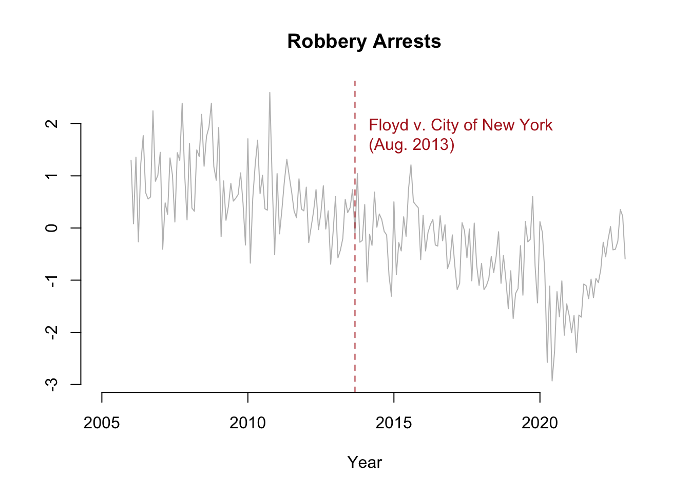

Imports
library(tidyverse)
library(ggplot2)
library(zoo)
library(kableExtra)
library(tseries)
library(forecast)
library(TSstudio)
library(astsa)
load("data/arrests_ts.Rdata")library(tidyverse)
library(ggplot2)
library(zoo)
library(kableExtra)
library(tseries)
library(forecast)
library(TSstudio)
library(astsa)
load("data/arrests_ts.Rdata")The first intervention analysis we will do will be on a topic discussed previously in the data visualization section. The decriminalization of marijuana in New York City clearly changed how the statistics looked for arrests related to the possession or sale of marijuana. It would be interesting, now that we have an accurate model for predicting marijuana possession arrests, to see what would have happened to those statistics if the policy interventions never occurred.
First, lets look again at marijuana possession arrests over time, this time with policy interventions labelled on the graph.
plot(marijuana_pos_ts,
bty="n", pch=19, col="gray",
xlim = c(2005,2023),
xlab = "Year",
ylab = "")
abline(v = 2014.917, col = "firebrick", lty = 2)
text(2015, 1.5, "Possession Fines Begin\n(Nov. 2014)", col="firebrick", cex=1, pos=4 )
title("Marijuana Possession Arrests")There definitely appears to be a difference in marijuana possession arrests before and after the intervention, which occured in November 2014 when New York City Mayor Bill De Blasio announced that tickets would be given to those possessing marijuana, rather than arresting offenders (Dizard 2014). We should proceed with our interrupted time series analysis, modeling the events before the interruption and seeing how they would have looked had the change never occurred.
Here we can see exactly when the treatment was applied, whether or not each point occured when the treatment was active, and the time since the treatment was applied for those variables that were under the influence of that treatment. This is important in determining if the effects of the treatment are short or long term effects.
df <- data.frame(marijuana_pos_ts) %>%
rename(Y = Series.1) %>%
mutate("T" = row_number())
df <- df %>%
mutate("T" = row_number(),
"D" = if_else(df$"T" > 107, 1, 0),
"P" = if_else(df$"T" > 107, row_number() - 107, 0))
df$Y <- round(df$Y, 3)
df.temp <- rbind(head(df, 3),
c("...","...","...","..."),
df[105:107,],
c("Start","Treatment","-","-"),
df[108:110,],
c("...","...","...","..."),
tail(df, 3))
row.names(df.temp) <- NULL
kbl(df.temp) %>%
kable_paper(full_width = F)| Y | T | D | P |
|---|---|---|---|
| 0.276 | 1 | 0 | 0 |
| 0.22 | 2 | 0 | 0 |
| 0.442 | 3 | 0 | 0 |
| ... | ... | ... | ... |
| 0.118 | 105 | 0 | 0 |
| 0.224 | 106 | 0 | 0 |
| -0.502 | 107 | 0 | 0 |
| Start | Treatment | - | - |
| -1.04 | 108 | 1 | 1 |
| -0.852 | 109 | 1 | 2 |
| -0.685 | 110 | 1 | 3 |
| ... | ... | ... | ... |
| -1.353 | 202 | 1 | 95 |
| -1.353 | 203 | 1 | 96 |
| -1.353 | 204 | 1 | 97 |
regTS <- lm(Y ~ T + D + P, data = df)
pred1 <- predict(regTS, df)
df2 <- as.data.frame(cbind(T = rep(1 : 365), D = rep(0), P = rep(0)))
pred2 <- predict(regTS, df2)
plot(df$T, df$Y,
bty="n", pch=19, col="gray",
xlim = c(0,204),
xlab = "Time",
ylab = "")
lines(rep(1:107), pred1[1:107], col = "dodgerblue4", lwd = 3)
lines(rep(108:204), pred1[108:204], col = "dodgerblue4", lwd = 3)
lines(rep(108:204), pred2[108:204], col = "darkorange2", lwd = 3, lty = 5)
# interruption line
abline(v = 107, col = "firebrick", lty = 2)
text(108, 1.5, "Possession Fines Begin\n(Nov. 2014)", col="firebrick", cex=1, pos=4 )
title("Marijuana Possession Arrests")We can confidently say that intervention resulted in a change in marijuana possession arrests. They decreasing before, but the change resulted in a short and long term decrease in arrests.
The next interruption we will look at will be crimes related to the controversial stop-and-frisk program, which allowed New York City police officers to stop and question people on the street, and if they had reasonable suspicion to do so they could frisk those individuals. In 2013, a lawsuit was filed in relation to these practices, Floyd v. City of New York. As a result of this lawsuit, officers are still able to conduct these practices, though officers now have to thoroughly justify why they made the stop. This resulted in the number of stops to decrease dramatically, from 685,724 at its height in 2011, to 45,787 one year after the lawsuit in 2014, and just 13,459 in 2019. Because of this dramatic change, we can use August 12, 2013, the date that case was decided as the date of our interruption.
We will follow the same process as before, this time looking at the effect this change of the stop-and-frisk policy had on robbery and assault arrests. Because the number of people stopped as a result of this program decreased so quickly and so dramatically, we can observe the effects of effectively repealing the program.
Did dramatically decreasing the number of stops from the stop-and-frisk program change the number of robbery and assault arrests?
First, lets look again at robbery arrests over time, this time with policy interventions labelled on the graph.
plot(robbery_ts,
bty="n", pch=19, col="gray",
xlim = c(2005,2023),
xlab = "Year",
ylab = "")
abline(v = 2013.667, col = "firebrick", lty = 2)
text(2013.8, 1.7, "Floyd v. City of New York\n(Aug. 2013)", col="firebrick", cex=1, pos=4 )
title("Robbery Arrests")
There does not appear to be much difference in robbery arrests before and after treatment.
Here we can see exactly when the treatment was applied, whether or not each point occured when the treatment was active, and the time since the treatment was applied for those variables that were under the influence of that treatment. This is important in determining if the effects of the treatment are short or long term effects.
df <- data.frame(robbery_ts) %>%
rename(Y = Series.1) %>%
mutate("T" = row_number())
df <- df %>%
mutate("T" = row_number(),
"D" = if_else(df$"T" > 92, 1, 0),
"P" = if_else(df$"T" > 92, row_number() - 92, 0))
df$Y <- round(df$Y, 3)
df.temp <- rbind(head(df, 3),
c("...","...","...","..."),
df[90:92,],
c("Start","Treatment","-","-"),
df[93:95,],
c("...","...","...","..."),
tail(df, 3))
row.names(df.temp) <- NULL
kbl(df.temp) %>%
kable_paper(full_width = F)| Y | T | D | P |
|---|---|---|---|
| 1.297 | 1 | 0 | 0 |
| 0.081 | 2 | 0 | 0 |
| 1.357 | 3 | 0 | 0 |
| ... | ... | ... | ... |
| 0.295 | 90 | 0 | 0 |
| 0.389 | 91 | 0 | 0 |
| 0.736 | 92 | 0 | 0 |
| Start | Treatment | - | - |
| -0.099 | 93 | 1 | 1 |
| 1.043 | 94 | 1 | 2 |
| -0.273 | 95 | 1 | 3 |
| ... | ... | ... | ... |
| 0.355 | 202 | 1 | 110 |
| 0.228 | 203 | 1 | 111 |
| -0.593 | 204 | 1 | 112 |
regTS <- lm(Y ~ T + D + P, data = df)
pred1 <- predict(regTS, df)
df2 <- as.data.frame(cbind(T = rep(1 : 365), D = rep(0), P = rep(0)))
pred2 <- predict(regTS, df2)
plot(df$T, df$Y,
bty="n", pch=19, col="gray",
xlim = c(0,204),
xlab = "Time",
ylab = "")
lines(rep(1:92), pred1[1:92], col = "dodgerblue4", lwd = 3)
lines(rep(93:204), pred1[93:204], col = "dodgerblue4", lwd = 3)
lines(rep(93:204), pred2[93:204], col = "darkorange2", lwd = 3, lty = 5)
# interruption line
abline(v = 92, col = "firebrick", lty = 2)
text(93, 1.7, "Floyd v. City of New York\n(Aug. 2013)", col="firebrick", cex=1, pos=4 )
title("Robbery Arrests")There was a slight immediate decrease in arrests, but the long-term trend was the same. This means that the stop-and-frisk policy had little to no effect on robbery arrests, meaning it did not do what it was supposed to do. Reducing stop-and-frisk stops significantly had no effect on robbery arrests, meaning the same number of crimes were committed regardless of the presence of the policy.
First, lets look again at assault arrests over time, this time with policy interventions labelled on the graph.
plot(assault_ts,
bty="n", pch=19, col="gray",
xlim = c(2005,2023),
xlab = "Year",
ylab = "")
abline(v = 2013.667, col = "firebrick", lty = 2)
text(2013.8, -2.3, "Floyd v. City of New York\n(Aug. 2013)", col="firebrick", cex=1, pos=4 )
title("Assault Arrests")There does appear to be a slight difference in assault arrests before and after treatment.
Here we can see exactly when the treatment was applied, whether or not each point occured when the treatment was active, and the time since the treatment was applied for those variables that were under the influence of that treatment. This is important in determining if the effects of the treatment are short or long term effects.
df <- data.frame(assault_ts) %>%
rename(Y = Series.1) %>%
mutate("T" = row_number())
df <- df %>%
mutate("T" = row_number(),
"D" = if_else(df$"T" > 92, 1, 0),
"P" = if_else(df$"T" > 92, row_number() - 92, 0))
df$Y <- round(df$Y, 3)
df.temp <- rbind(head(df, 3),
c("...","...","...","..."),
df[90:92,],
c("Start","Treatment","-","-"),
df[93:95,],
c("...","...","...","..."),
tail(df, 3))
row.names(df.temp) <- NULL
kbl(df.temp) %>%
kable_paper(full_width = F)| Y | T | D | P |
|---|---|---|---|
| -0.514 | 1 | 0 | 0 |
| -1.266 | 2 | 0 | 0 |
| 0.5 | 3 | 0 | 0 |
| ... | ... | ... | ... |
| 1.306 | 90 | 0 | 0 |
| 1.904 | 91 | 0 | 0 |
| 1.223 | 92 | 0 | 0 |
| Start | Treatment | - | - |
| 0.717 | 93 | 1 | 1 |
| 0.797 | 94 | 1 | 2 |
| 0.002 | 95 | 1 | 3 |
| ... | ... | ... | ... |
| -0.255 | 202 | 1 | 110 |
| -0.665 | 203 | 1 | 111 |
| -0.857 | 204 | 1 | 112 |
regTS <- lm(Y ~ T + D + P, data = df)
pred1 <- predict(regTS, df)
df2 <- as.data.frame(cbind(T = rep(1 : 365), D = rep(0), P = rep(0)))
pred2 <- predict(regTS, df2)
plot(df$T, df$Y,
bty="n", pch=19, col="gray",
xlim = c(0,204),
xlab = "Time",
ylab = "")
lines(rep(1:92), pred1[1:92], col = "dodgerblue4", lwd = 3)
lines(rep(93:204), pred1[93:204], col = "dodgerblue4", lwd = 3)
lines(rep(93:204), pred2[93:204], col = "darkorange2", lwd = 3, lty = 5)
# interruption line
abline(v = 92, col = "firebrick", lty = 2)
text(93, -2.3, "Floyd v. City of New York\n(Aug. 2013)", col="firebrick", cex=1, pos=4 )
title("Assault Arrests")These results are very different from the robbery arrests. There is a short-term decrease here as well, but surprisingly there is significant evidence for a decrease in the long-term trend for assault arrests. Had the changes never happened to the stop-and-frisk policy, we may have seen assault arrests continue to increase rather than decrease as they actually did. Making the changes that the lawsuit did to the policy resulted in fewer assault arrests going forward.
Information on the stop-and-frisk policy was obtained here.